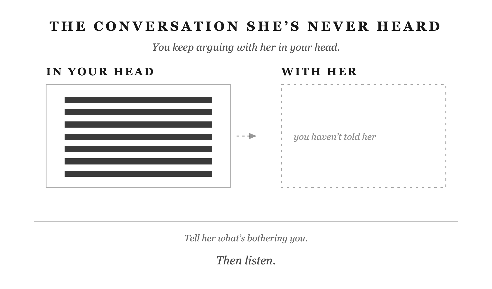

You’ve decided not to bring it up, but you’re still thinking about it. Maybe it’s a purchase you wish you’d discussed first. Maybe it’s a remark that embarrassed you in front of the kids. You let the evening go on. Now you’re in bed, explaining to yourself why you stayed quiet.
You tell yourself you have to choose your hills to die on. Sometimes that’s good judgment. A small annoyance doesn’t need a long conversation. But sometimes you’re avoiding a conversation because you expect it to be uncomfortable. You want her to know you’re hurt without having to tell her.
From her side, you haven’t said there’s a problem.
Before you decide to speak, ask what you’re dealing with. Some problems need a conversation or a practical step. Some hardships can’t be ended by either of you. Some annoyances aren’t worth trying to change.
A purchase you couldn’t afford may need a spending agreement. An illness may mean months of care, even when you’re doing everything you can. A hobby you don’t enjoy may simply be something your wife likes. Staying quiet about all three won’t serve your marriage. Neither will trying to fix all three.
Start with the problem you can act on. Have you said what’s bothering you? Have you made a clear request? Have you tried the practical step that might help? You can’t know whether a conversation will help if you’ve only imagined having it.
You might have tried already. Perhaps you’ve asked for counseling and she won’t go. That matters. An offer she’s refused is different from an offer you haven’t made. Be accurate about which position you’re in. Her answer limits what you can do together today; it doesn’t mean you have no choices left.
Other hardships won’t end because you find better words. You can’t talk a dying parent back to health. You can’t make missing income appear by explaining how worried you are. You may still have bills to sort out, care to arrange, or help to ask for. But the illness or loss remains, and you have to live through it together.
Then there are preferences you can leave alone. You don’t have to enjoy her hobby or choose all the same friends. If her brother’s opinions annoy you, you can disagree without spending the whole visit arguing. Ask whether there’s harm to address or just a difference you don’t like.
Marcus Aurelius was a Roman emperor who wrote private reminders about how to live. One of them was about choosing what deserved his attention. “It is in our power to have no opinion about a thing, and not to be disturbed in our soul; for things themselves have no natural power to form our judgments.” (Meditations 6.52, Long trans.) You don’t have to decide what you think about every comment you hear, much less respond to it.
Some of my wife’s friends aren’t helpful to the relationship. They’re not against it, but they say things that don’t help. I tolerate that because I want her to have real friends. Those friendships matter more to me than the comments. Politics used to wait for Thanksgiving. Now it doesn’t. I tolerate those conversations too.
Tolerance makes sense when you can say why you’re choosing it. You want her to enjoy her friendships. You want to see your family even though you disagree about politics. You can dislike part of the visit and still want to go.
That doesn’t make every problem a minor annoyance. If you’re hurt each time a particular remark comes up, say what the remark does to you. Calling it small won’t help if you spend the next two days resenting it. And if you can let a difference go, let it go without reminding her what you put up with. Arguing about a harmless preference can use up the evening while the problem you need to discuss goes unmentioned.
For about ten years, we lived mostly on my wife’s income while I was building a company with no guaranteed paycheck. Three kids. Both of us working full time. We didn’t know when the money would get easier.
When a hard period lasts that long, you get used to doing less for yourself. You cancel plans. You put off rest. Sometimes that’s necessary. But you can keep doing it after the need has passed, because you stopped asking what you could afford to resume.
Notice what you’ve given up and whether it still needs to stay on hold. If you’re exhausted, say you’re exhausted. If you need an evening to rest, ask for it. Your wife can’t help you make a different plan if you keep telling her you’re fine.
Marcus wrote about bearing hardship this way. “Everything which happens either happens in such wise as thou art formed by nature to bear it, or as thou art not formed by nature to bear it. If, then, it happens to thee in such way as thou art formed by nature to bear it, do not complain, but bear it as thou art formed by nature to bear it.” (Meditations 10.3, Long trans.)
In plain English: when you have to live through something you can bear, meet it without repeatedly telling yourself how unfair it is. Complaining won’t end the hardship. That still leaves room to say you’re tired, ask for help, and tell your wife you’re worried.
There are several ways to get this wrong. You can become so overwhelmed that you stop doing your share and leave her managing everything. You can shut down and barely speak, getting through each day without much interest in her or the kids. Or you can insist you’re fine until you lose your temper over a small mistake.
Being quiet doesn’t tell you which of those you’re doing. Look at how you’re treating your family. Are you listening when she talks? Can the kids ask you a question without getting snapped at? Can you admit you’re having a bad day before everyone has to guess?
Staying steady means you keep taking part in family life while admitting that it’s hard. You do the work you can do. You accept help with what you can’t manage. You tell her what’s worrying you without expecting her to remove every worry.
You can have a difficult evening without making the whole family responsible for it. If you speak sharply, apologize for speaking sharply. The financial pressure may explain why you’re tired. It doesn’t settle what you owe the person you snapped at.
The hardship may last. You can still have honest conversations, pay attention to your children, and make room for rest while it does.
Suppose your wife raises her voice at the kids. Later, when you raise yours, she tells you that you’re frightening them. You feel there’s one rule for her and another for you. But you’re reluctant to say so because it could sound like a request for permission to yell.
There may be a real difference in how the children experience your voices. Your size and volume can frighten them in a way hers don’t. That deserves your attention. So does the question of how both of you should speak when you’re angry.
You can agree to stop yelling and still ask for a shared standard. For example: “I heard you when you said I scared them. I need to change that. Can we also talk about how we both handle it when we’re angry with the kids?”
That’s a conversation she can answer. The argument you’ve had with her in your head gives her no such chance.
Chapter 7 asked you to stop keeping score over who did more chores or worked more hours. It didn’t ask you to stay quiet about hurtful behavior. You can give generously without agreeing that only one of you has to speak respectfully.
Before you call a rule unfair, make sure you know what the difference is. Perhaps you shop rarely and spend more each time. She shops often and spends less each time. You both think the other spends too much. Compare what you’re actually spending before you argue about who gets special treatment.
Sometimes a different expectation has a reason, as it may when your voice frightens the children. Ask about the reason and discuss what each of you will do. An explanation gives you something to consider besides whether you’ve been treated unfairly.
Sometimes neither of you can explain the difference. Perhaps being tired excuses her sharp tone, while yours gets challenged. Name the behavior and ask for the same care from both of you: “I want us both to be able to say we’re tired without being short with each other.”
These are examples of words you might use, not claims that she will agree. She may describe something you’ve missed. You may realize the two situations were different. You may still disagree. But now you’re discussing what happened together, instead of deciding alone what she meant.
You don’t have to choose years of silence for it to happen. You only have to keep deciding that today is a bad day.
The first time, you’re tired and don’t want an argument. The second time, everyone’s enjoying the evening. A remark bothers you, but you don’t want to interrupt the laughter. The third time, she feels strongly about the subject and you expect a long discussion. Each delay has a reason you can explain.
Then you begin worrying about the delay itself. If you bring it up now, she might ask why you said nothing before. You’ll have to explain that it bothered you then too. Staying quiet starts to seem easier than admitting you’ve been unhappy for a while. You may also worry that once you start, you’ll bring up every other complaint you’ve kept to yourself. Now one conversation feels like several arguments at once.
I have an aversion to pain and an aversion to fighting. When a small problem needs discussing, I can usually think of a reason today isn’t the day. I also know what happens when I keep doing that. I hold back until I get angry over something that didn’t deserve it.
You may recognize the argument that repeats in your head. You explain what hurt you. You imagine her disagreeing. You prepare your answer to that disagreement. By the time you see her, you’re already frustrated with a response she hasn’t given.
Thinking it through once can help you speak clearly. Repeating it without deciding what to do can leave you angrier and no better prepared. You’ve spent another evening on the problem, and she still doesn’t know what it is. You can recognize where you’ve been avoiding the conversation: you’ve been having entire arguments in your head that you aren’t willing to have with her.
In 2003, Wendy Treynor and her colleagues distinguished between two ways of dwelling on a problem. Reflection tries to understand it and work out what to do. Brooding keeps returning to how bad it feels. Ask which you’re doing. Have you decided what to say, or have you only repeated your complaint?
The risk is that you eventually snap at the wrong moment. Amy Marcus-Newhall and her colleagues examined displaced aggression in 2000: anger directed at someone other than its original source. In your marriage, watch for a small annoyance getting a response that belongs to another problem you haven’t discussed.
From your wife’s side, tonight’s remark may seem minor. She hasn’t heard the other conversations you’ve been having in your head. Your anger won’t explain them for you. You’ll still need to say what has been bothering you.
If you criticize her, then walk away before she can answer, you give her no chance to explain her side. If you keep quiet until you lose your temper, she has to guess what has been bothering you. In either case, you still haven’t discussed the problem together.
You need a way to raise a concern while it’s still specific enough to discuss. You also need to listen when she tells you how she sees it.
When a remark hurts you, say which remark and why. For example: “That joke about my spending embarrassed me in front of the kids. I’d rather we talk about money in private.” You haven’t accused her of ruining the evening. You’ve told her what happened for you and what you’re asking for.
If you’re too angry to speak kindly, take time to settle down and say when you’ll return to the conversation. Postponing it until after dinner is different from deciding, again, that you’ll say nothing. Keep the time you agreed on.
Once you’ve said what you mean, give her room to answer. You don’t have to repeat yourself until she agrees. You don’t have to get an apology before the evening can continue. You can be disappointed by her response and still be glad you spoke honestly.
This doesn’t mean you have to settle a serious, repeated problem with one sentence. It means you stop treating immediate agreement as the condition for speaking at all. If you need another conversation, have one. If you need help having it, ask for help.
Chapter 5 dealt with how to behave during a hard conversation. The question here comes earlier: will you tell her there’s a problem? You can know how to stay calm in an argument and still avoid starting a necessary discussion.
If you’ve been silent for a long time, look back at what that silence has changed. Courage means having the conversation you’ve been avoiding. Kindness means continuing to treat her with care while you’re upset. If you’ve stopped asking about her day or caring how she feels, your silence has changed how you treat her. Patience means giving the conversation time and returning to a problem that still needs attention.
Self-control means keeping your tone respectful when her answer disappoints you. It also means trying again after several frustrating attempts, instead of giving up on a problem that still needs attention. Wisdom means remembering what she actually knew. If you never told her, don’t blame her for failing to answer the arguments you kept to yourself.
These qualities give you something to practice now. You don’t need to spend another night condemning yourself for waiting. You can say, “I should have brought this up sooner. It’s been bothering me, and I’d like us to talk.”
Before you decide that nothing can change, try the conversations and help you’ve been putting off. Write down what you want to say if you struggle to explain it. Make time together without interruptions. Consider a communication class or therapy if you keep getting stuck. A weekend away may give you time to talk, but you still have to talk.
An honest request may not get the answer you want. It gives both of you a chance to understand the problem. The next decision can then be based on a conversation you’ve actually had.
Tell her what bothered you while you can still talk about that one moment, then listen to what she says.

Not part of the chapter · working notes
Mechanism: The Conversation She’s Never Heard
Conversation sentence: You keep arguing with her in your head, but you haven’t told her what’s bothering you.
Some problems need a conversation or a practical step. Some hardships have to be lived through even when you’re doing what you can. Some annoyances can be left alone. Decide which you’re facing before you choose silence. If a problem needs discussing, tell her what it is while you can still speak kindly and listen.
Lesson: Tell her what’s bothering you, ask clearly for what you need, and listen without demanding immediate agreement.
Challenge: Each delay can seem reasonable until you’re afraid to bring up the problem because you’ve already waited so long.